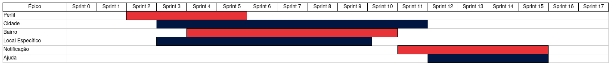

Backlog do Produto
1. Introdução
Este documento se destina a descrever e priorizar o conjunto de épicos, histórias e tasks que irão compor o escopo do aplicativo Stay Safe. Ao longo do projeto modificações podem ser feitas no backlog para que ele se adeque as novas expectativas sobre o produto.
2. Épicos
Podem ser descritos como grandes áreas do projeto que não foram detalhadas a ponto de se tornarem histórias de usuário e, portanto, não podem ser transformadas em incrementos ou funcionalidades do produto. Nesse projeto os épicos foram separados em:
- Perfil
- Cidade
- Bairro
- Local Específico
- Notificação
- Ajuda
2.1 Visualização dos Épicos do Projeto em Função do Tempo
O diagrama abaixo ilustra o planejamento de ínicio e término de todo trabalho contido em um épico, a ordem de execução dos épicos é decidida por fatores como prioridade e dependência.

3. Histórias
Histórias de usuários são, resumidamente, uma forma simplificada de descrever os requisitos que devem ser contemplados no produto final. Essas histórias devem ser descritas de forma natural, num formato que seja possível visualizar como o usuário estabelecerá uma relação com a aplicação por meio de determinada funcionalidade. Nesse documento as histórias planejadas são separadas por épicos e possuem tarefas que, ao serem finalizadas, sinalizam a conclusão da história. Como algumas tarefas precisam ter sido concluídas para que seja possível cumprir as demais, as tarefas "gerais" de cada épico foram inseridas na primeira história de cada um. As especificações de cada história e suas tarefas podem ser acessadas através dos links disponibilizados na coluna ID da tabela.
3.1 Épico Perfil
| ID | Eu, como usuário gostaria de... | Para poder... | Priorização |
|---|---|---|---|
| US01 | Me cadastrar na aplicação | Ter acesso a funcionalidade de registrar ocorrência | Must |
| US02 | Fazer o login na aplicação | Ter acesso a funcionalidade de registrar ocorrência | Must |
| US03 | Editar as minhas informações de cadastro | Corrigir uma informação errada | Should |
| US04 | Fazer o logout da aplicação | Entrar com outra conta | Must |
| US05 | Excluir minha conta | Me desvincular do aplicativo | Should |
3.2 Épico Cidade
| ID | Eu, como usuário gostaria de... | Para poder... | Priorização |
|---|---|---|---|
| US06 | Visualizar estatísticas de crime de uma cidade | Ter uma real noção de sua segurança | Must |
| US07 | Comparar estatísticas de crime em anos diferentes numa mesma cidade | Verificar se a cidade está se tornando mais ou menos violenta | Could |
| US08 | Visualizar cidades ordenadas de acordo com critério escolhido | Visualizar qual a mais segura no critério que defini | Should |
| US09 | Visualizar cidades em formato de mapas de calor de acordo com o filtro escolhido | Comparar o nível de segurança das cidades ao meu redor | Must |
3.3 Épico Bairro
| ID | Eu, como usuário gostaria de... | Para poder... | Priorização |
|---|---|---|---|
| US10 | Avaliar um bairro | Dar meu feedback sobre a segurança do bairro e ajudar outros usuários | Should |
| US11 | Editar avaliação de um bairro | Corrigir um feedback errado que registrei | Could |
| US12 | Excluir avaliação de um bairro | Apagar avaliação precipitada que realizei | Should |
| US13 | Visualizar avaliação de um bairro | Me informar sobre a segurança de um bairro | Should |
| US14 | Visualizar avaliação de bairros através de mapa de calor | Verificar os bairros mais seguros a minha volta | Could |
| US15 | Visualizar meu histórico de avaliação de bairros | Relembrar o que apontei nas minhas avaliações anteriores | Could |
3.4 Épico Local Específico
| ID | Eu, como usuário gostaria de... | Para poder... | Priorização |
|---|---|---|---|
| US16 | Cadastrar anonimamente uma ocorrência | Contribuir com a segurança de outros usuários | Must |
| US17 | Editar as informações de uma ocorrência que registrei | Corrigir uma informação errada que foi inserida | Should |
| US18 | Excluir uma ocorrência que registrei | Apagar uma ocorrência que cadastrei indevidamente | Should |
| US19 | Navegar pelo mapa e verificar ocorrências registradas | Verificar o nível de segurança de um local | Must |
| US20 | Filtrar por tipos específicos de ocorrências | Verificar o nível de segurança de um local sob um aspecto específico | Should |
| US21 | Visualizar meu histórico de ocorrências registradas | Relembrar as ocorrências que registrei | Could |
3.5 Épico Notificação
| ID | Eu, como usuário gostaria de... | Para poder... | Priorização |
|---|---|---|---|
| US22 | Favoritar locais | Usar a funcionalidade de notificação de crimes a local próximo | Should |
| US23 | Editar configurações de notificação | Escolher quais tipos de notificações desejo receber | Should |
| US24 | Ser notificado quando um crime ocorre próximo a um local favoritado | Me manter seguro nos locais que mais frequento | Should |
| US25 | Ser notificado quando um crime ocorre próximo ao meu local atual | Tomar medidas de precaução que aumentem minha segurança | Could |
| US26 | Ser notificado quando a aplicação é atualizada com novos dados das SSP | Visualizar os novos dados a respeito da minha cidade | Should |
3.6 Épico Ajuda
| ID | Eu, como usuário gostaria de... | Para poder... | Priorização |
|---|---|---|---|
| US27 | Visualizar um guia ao entrar no aplicativo pela primeira vez | Identificar as principais funcionalidades do aplicativo | Could |
| US28 | Ser direcionado a delegacia mais próxima | Registrar um boletim de ocorrência a respeito do crime que sofri | Would |
| US29 | Ser encaminhado para fazer o cadastro de um boletim eletrônico | Registrar um boletim de ocorrência eletrônico a respeito do crime que sofri | Could |